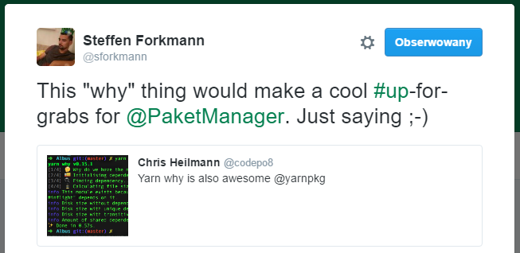
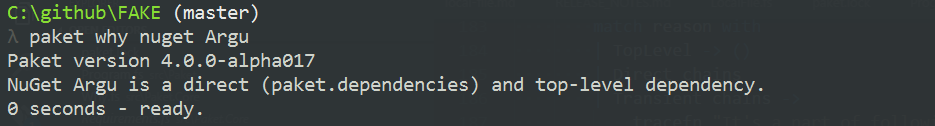
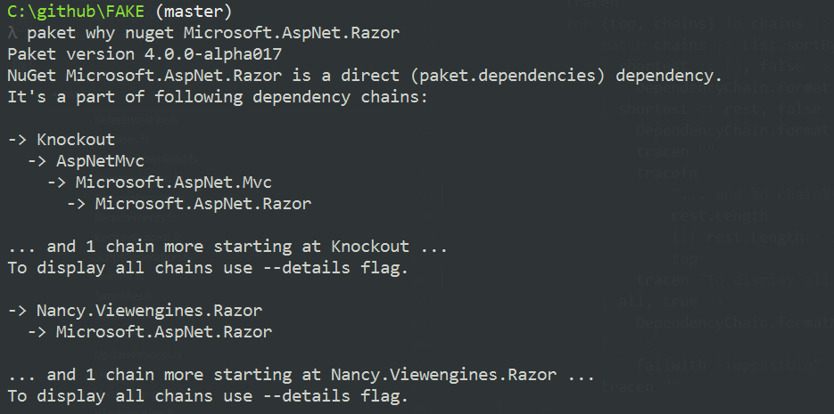
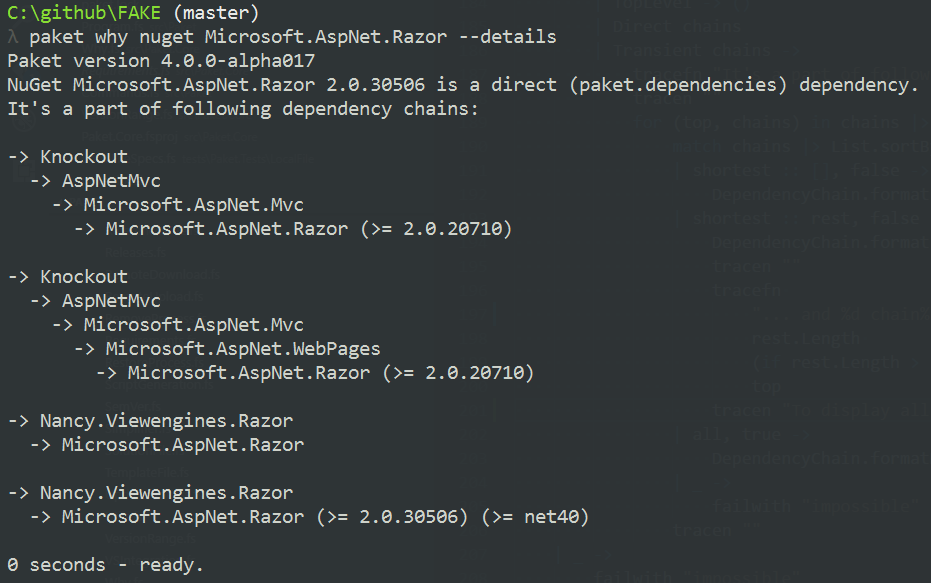
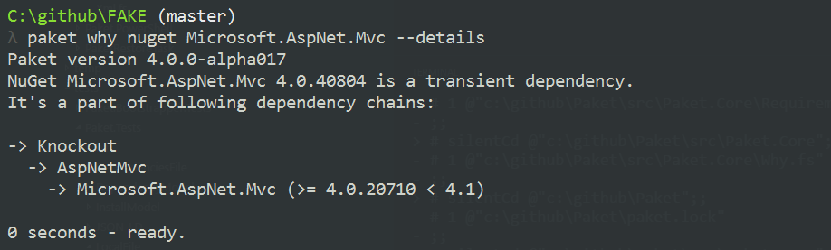

Paket 'why' command
In this entry I introduce a brand new command called "why" in Paket dependency manager. It was inspired by a recent project of Facebook, Yarn and aims to display user-friendly reason for a specific package to be under dependency management. The command is available in Paket 3.26.
Inspiration
Lately Facebook has released a new JavaScript dependency manager on top of NPM. It's called Yarn and as per the docs, it is supposed to provide
"Fast, reliable, and secure dependency management."
The product comes with a plenty of commands, one of which is called "why".

Steffen's tweet was a motiviation for me to contribute once again to Paket, also cause I would find interest in such feature myself.
Implementation
If a specified package is listed in paket.lock file (which basically means it's under Paket management control), then reason for its presence is one of the following:
1: 2: 3: 4: 5: 6: 7: 8: 9: 10: 11: |
|
TopLevelstands for a package which is not a dependency of any other packages controlled by Paket (hence "top-level"). It must be listed in paket.dependencies - we call these "direct" dependencies.-
Directis also a direct dependency however contrary toTopLevel, there's at least one other package managed by Paket that depends onDirect. Note thatTopLevelwill always be a direct package, butDirectwon't always be "top-level". Transitivemeans an "indirect" dependency. The sole reason it's kept track of by Paket is because it's a dependency of some other package.
Example
As example, let's have a look at dependencies of FAKE project:
1: 2: 3: 4: 5: 6: 7: 8: 9: |
|
The paket.dependencies file for FAKE enlists some dependencies - we say that these are "direct" dependencies.
Dependency resolution for FAKE project can be found in paket.lock:
1: 2: 3: 4: 5: 6: 7: 8: 9: 10: 11: 12: 13: 14: 15: 16: 17: 18: 19: 20: |
|
Note that above is just an excerpt from the whole file. While paket.lock is very precise on the dependencies resolution, it might be hard for a human to comprehend what is the dependency chain for a given package.
Thanks to the "why" command, we can get a nice overview of dependencies resolved by Paket:

In case of Argu, it turns out to be a top-level (hence also direct) dependency in FAKE.

Microsoft.AspNet.Razor on the other hand is not a top-level dependency.
For example there's Microsoft.AspNet.Mvc which depends on Microsoft.AspNet.Razor package.
Even though it's not top-level, it is still a direct dependency, because as we saw before it's included into paket.dependencies manifest.
By default "why" command will display only shortest dependency chain from any top-level package down to the specified one.
If however we're interested in more details, we can print more details by adding --details argument to the command:

The --details flag displays also information about version requirements as well as framework constraints if any.
What about transitive dependencies? In FAKE project, Microsoft.AspNet.Mvc is an example of transitive dependency:

Summary
The new "why" command allows to easily determine why a given package is under Paket control. This in turn can help us better understand our dependencies within a project and enable smoother management.
The command is now available in Paket 3.26.
Till next time!
| TopLevel
| Direct of obj
| Transitive of obj
Full name: paketwhycommand.Reason
Full name: Microsoft.FSharp.Collections.list<_>